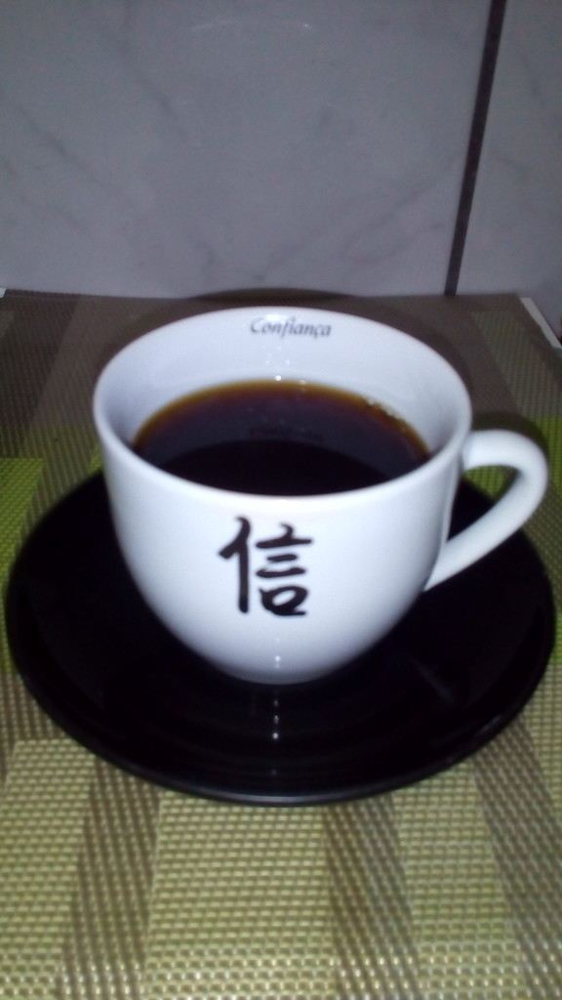

How Persona 5 Sparked My Interest in the World of Coffee
- View this page in:
- English
- 日本語
- Português


Accessibility, audio, games, Linux and other things, from the point of view of a visually impaired.
It's not the first time that a game from the Persona series makes me go out of my way to learn something new. The game Persona 3 even made me try to prepare ramen even though cooking isn't my thing. Now, it's Persona 5's turn.
In Persona 5, while acting just like a normal student during the day and fighting injustice and corrupt people at night, the young protagonist is forced to live in the attic in a coffee shop, and one of the activities to get items for missions is learning to prepare a good cup of coffee. But it isn't just any coffee!
Sometimes, when the protagonist prepares coffee, the cafe owner comes and tastes the result, then says something like, "From this taste, you used beans 'XYZ,' didn't you? Let me explain!" and proceeds to release some trivia about the given coffee beans. In my case, it got to a point where he stopped coming to taste the coffee and give trivia, and I thought it wouldn't happen anymore. Also, he always said the coffee was bland, and I thought this was his only possible response. So, I thought, "If there's no more trivia and the coffee will be bland forever anyway, then why should I waste my time? The ingame days are limited, and there are more important things to do," and gave up.
However, later I found out I was totally mistaken, both about the trivia and the responses. I should've kept insisting. Apparently, I hadn't seen even the half of it! The user Chapsthedude on Reddit compiled all (or if not all, almost) coffee trivia, and there are even two Brazilian coffees, the Brazilian 2/18 (according to the game, it's also known as Santos, where 2 refers to the quality and 18 is the bean size) and the Brazilian Bourbon. I thought this was very cool!
I've always enjoyed coffee, but had never gone beyond the common supermarket coffees or espressos from snack bars once in a while. Before Persona 5, I had no idea how the coffee world could be so vast. The game got me curious, and I decided to do some reading-up. Then, I learned that:
I was curious to try some of these specialty coffees, but I didn't know any real coffee shops (apart from those neighborhood snack bars that serve espresso). So, to start, I decided to do a test with some ground gourmet coffees I found in the Pão de Açúcar mini market close to my home. They indeed taste different from what I was used to (don't be fooled. Even those light-colored coffees may have a strong flavor!). Overall, I liked it! The problem is that it's impossible to know when the beans were roasted and ground (as these products likely don't sell much because they are more expensive than the most common coffees, I don't doubt they've been sitting on the store's shelf for at least a month!). As it's kind of expensive (at least here, a pack of 250 grams of gourmet coffee is sold around $25.00 BRL - roughly $8 USD -, while a pack of 500 grams of "traditional" coffee is around $10.00 BRL, or around $3 USD), I just allowed myself the luxury of buy one 250 grams pack per month and drink it only on weekends. This increases the "time passed after roasting and grinding" factor even more, but oh well...
I wanted to go deeper into the coffee world, but I've been procrastinating it for at least half a year because of the risk of getting addicted, becoming too picky and getting unable to return to ordinary coffee, which means it can become quite expensive. I was considering to buy an entry-level manual grinder (about $200 BRL, around 70 USD) to be able to have freshly-ground coffee, and maybe some different coffee maker like an Aeropress (also around $200 BRL here), aside from the beans themselves ...
I still wasn't brave enough to take the plunge and buy equipment, as I still haven't tried coffee brewed using different methods, and don't have any reference of flavors or brewing methods to see what I like best. My coworker advised me to go to a Starbucks coffee shop, try their coffee of the day, and bring home the ground beans while I don't have a grinder. I searched for the nearest Starbucks, and found the one at the Metro Santa Cruz Shopping mall (São Paulo/SP, Brazil), and I decided that Id go there during my vacation. And I finally did!
My plan was to try the coffee of the day, and buy the beans of the same coffee to compare the flavor with the output of the simple coffee maker at home... but it didn't go the way I had expected. As it was the first time, I fumbled a little while placing the order, and the attendant was unable to explain how things worked. He only gave me the option to have espresso or coffee with milk (and it seems that they only had espresso machines), while the beans of the day's campaign were from a Papua New Guinea coffee. To me, the taste of the espresso was "just right" (unlike another store's espresso I had, which was very strong and left a not very pleasant sensation in my mouth). Then I found out that they also sell the beans they use for that espresso (it's their own blend they call Espresso Roast), but since I don't have an espresso machine, it wouldn't do. I ended up taking the New Guinea one anyway... at least I'm sure it's freshly roasted and ground!
And this is how the coffee looks like in the cup, after going through the simple coffee maker here... (own picture, taken with a cellphone)

I found the taste very smooth, but I'm not sure if I could identify the herbal touches mentioned in the package (there's a little flavor that reminds me of something but I don't know if that's what the package is talking about). I wonder if other cooking methods / equipment would make these flavors stand out a bit more. I also tried the coffee with milk and it was... interesting. It's as though I had mixed something salty together with something sweet to balance it out (though I didn't put sugar in either the coffee or the milk). Or at least, this was the impression I had. Sorry, I don't know how to describe it :P . This was the best I could do!
And to wrap this post up, here's the sound of the coffee being served! XD Not that it was necessary, but I just felt like recording it. At least, if I decide to do a Persona 5 audio drama that has a scene involving coffee, I already have the sound effect :P .
(* The boss suddenly appears*)
"Ah. From this taste, you used the Guinea PNG beans, didn't you? Let me explain! The Papua New Guinea coffee, or PNG, is produced on Papua New Guinea Island, which is about 150km north of Australia. The coffee is produced in a hard-to-reach region, on soils rich with nutrients from volcanic activity. It produces a drink with a light flavor and herbal touches." A pause. "... But you still have a lot to learn. Your result is still bland... There's much room for improvement! Starting with the equipment..."
Ugh... okay, I'll think about it. I don't know where I want to get with this yet, but I'll keep insisting. We'll see!
And this is more or less how I think the trivia about this coffee could be if it were in Persona 5. Mostly based on info written on the package.